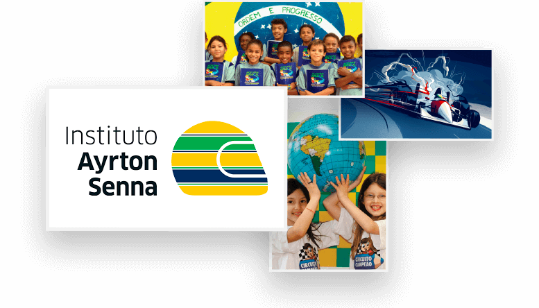

Senna changed the way how Brazilians lived their Sunday mornings. Waking up to see him win was a habit within most homes, always accompanied by Galvão Bueno's excited speech and the frenetic pace of his already recognized Victory Fanfare. His death did not erase the brightness of his existence; on the contrary, managed to evidence the incredible human behind the athlete and leave sensitive marks in all spheres explored during his life.
THE HERO IN SPORT
In his sport, the marks left are countless. In 1990, the Interlagos racetrack underwent a radical change in its layout and a sloped curve was proposed to connect the pit straight to the curve of the sun. Ayrton did not miss the opportunity and proposed that an "S" make the connection, in a clear allusion to the surname so beloved by the Brazilians. His death brought new safety standards for F1 that had long been needed: new barriers, redesigned curves to minimize the possibility of accidents, high safety measures and the cockpit of the riders rethought.
In December 2009, the English publication Autosport conducted a survey of more than 200 motoring athletes to elect the best Formula 1 driver of all time. The result could not be different: Ayrton Senna took the title. The British state communications network, BBC, went further and elected him the best Formula 1 driver in History.
In addition to public recognition, Senna became a true inspiration to those who began their career in any sport. Focused on his ultimate goals, Ayrton did not let any trouble of course put his dreams in the pit stop. For him, success was the only option and with high levels of dedication, achieved.
Greatest Hero Legacy
Ayrton was a lover of the purity of children. When near them, his face showed the clearest sense of peace of mind, represented by the broad smile on his face. Changing the reality of young people by bringing them closer to their dreams was a goal that he sets for himself. After his death, it was reported that much of his inheritance was earmarked for actions to help children and young people living in poverty. And it is precisely from this dream that the Ayrton Senna Institute was born, fulfilling the ideals that were once drawn by its mentor and today firmly commanded by the hands of Viviane Senna, the pilot's sister.
Find More THE HERO ON THE
BRAZILIAN HEART
A major symbol of patriotism, Senna is a landmark in the lives of Brazilians who have experienced his victories. Even knowing that the final flag would be in favor of our pilot, everyone wake up, switch on their televisions and watch anxiously for the green and yellow flag waving on the final track. His death was one of the most painful lost for our nation. There are hardly anyone who does not remember what he was doing when the sad news run through the press. Clinging to a sob in disguise, Brazil silently watched his tragic farewell and the last display of the yellow and blue helmet that we were so proud of. Despite the pain, Ayrton left in our hearts the sincere mark of a man who fought for his dreams and honored his homeland until the last second of his life.